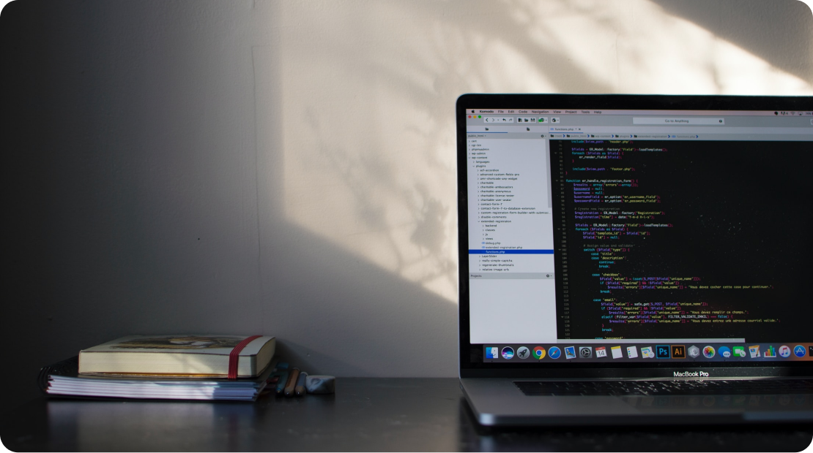
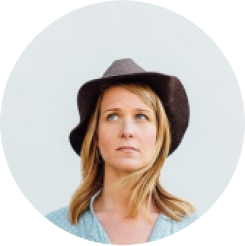
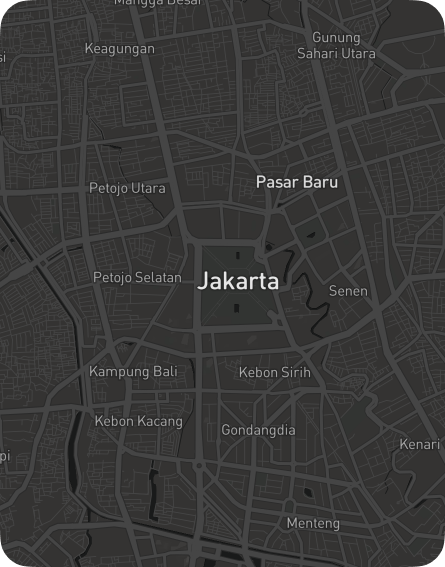

.png)
My most recent work stint was with Sprinklr where I designed for some of its core offerings like Social Media Engagement, Social Advertising, Care support and Analytics for big brands with a global reach that helped integrate all their social marketing needs under one roof. Having led the design team for four years in this young, rapidly growing enterprise startup environment - taught me how to balance business goals and engineering constraints as I unrelentingly advocated for the user.
I graduated from Symbiosis Institute of Design, India with a degree in User Experience Design. I loved the human-centered design methods and processes I learned in school and applied them to my thesis project with Microsoft R&D, Hyderabad
I grew up in 7 different states in India and my ability to quickly adjust to new challenges in life comes from that. Owing to my diverse upbringing, I embrace all cultures and try to bring it to the designs I create. I am a movie buff and there’s nothing like relaxing to a good masala Bollywood movie. Food is my second love and I let my nose guide me to the pleasures of the stomach once every weekend.

Our Team

Cody Fisher
Back End Developer
.png)
Cody Fisher
Back End Developer
.png)
Cody Fisher
Back End Developer

Enter your name
Enter your email